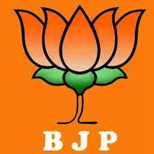
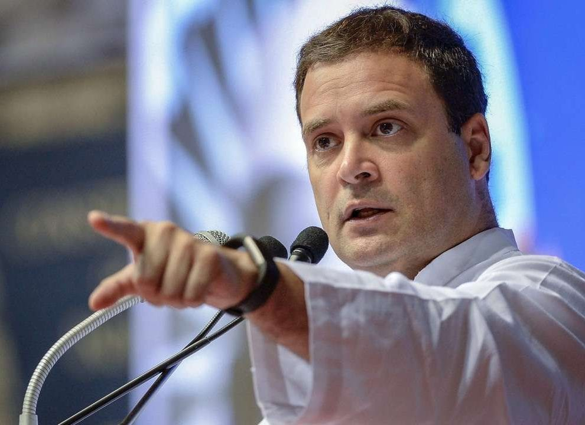
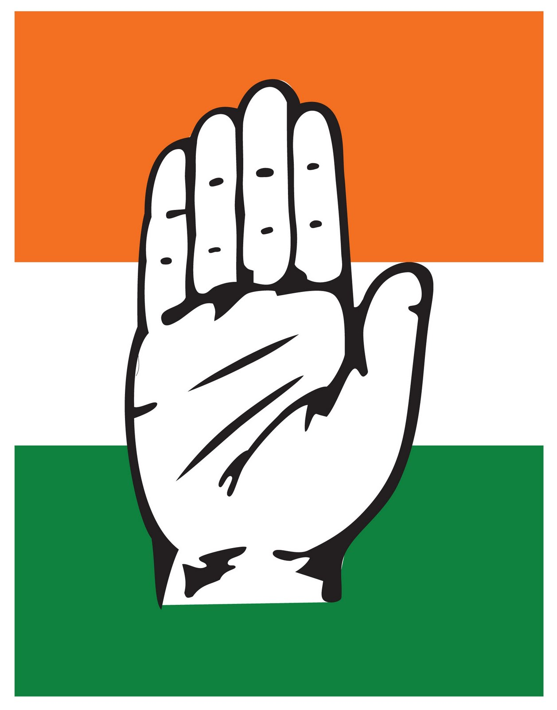
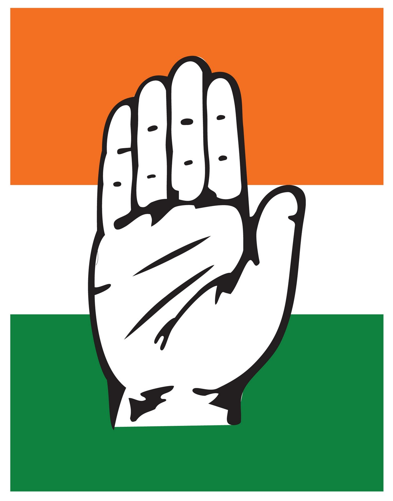
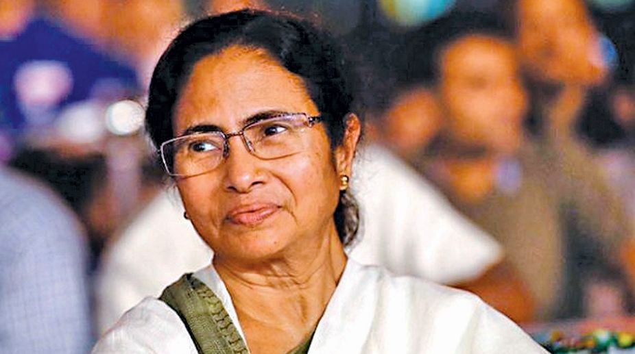
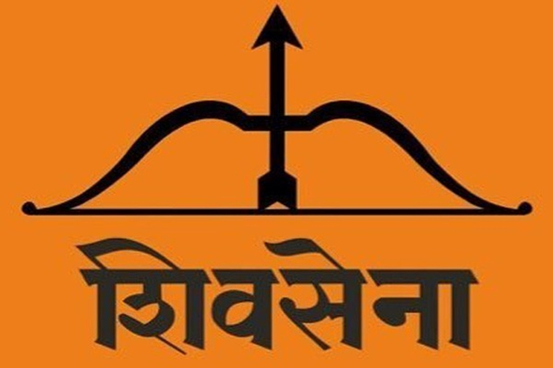

Narendra Damodardas Modi
Narendra Damodardas Modi is an Indian politician serving as the 14th and current Prime Minister of India since 2014. He was the Chief Minister of Gujarat from 2001 to 2014 and is the Member of Parliament for Varanasi. Modi is a member of the Bharatiya Janata Party and of the Rashtriya Swayamsevak Sangh, a Hindu nationalist volunteer organisation. He is the first prime minister born after India's independence, the second non-Congress one to win two consecutive terms after Atal Bihari Vajpayee and first to win both terms with majority outside Congress as well.
- Born: September 17, 1950 (age 70), Vadnagar, Gujarat
- Spouse: Jashodaben Modi
- Education: Gujarat University (MA)(1983), University of Delhi (BA)(1978)
- Parents: Hiraben Modi, Damodardas Mulchand Modi
- Political Party: Bharatiya Janata Party


Rahul Gandhi is an Indian politician and a member of the Indian Parliament, representing the constituency of Wayanad, Kerala in the 17th Lok Sabha. A member of the Indian National Congress, he served as the President of the Indian National Congress from 16 December 2017 to 3 July 2019. Gandhi is the chairperson of the Indian Youth Congress and the National Students Union of India.
Rahul Gandhi
Rahul Gandhi is an Indian politician and a member of the Indian Parliament, representing the constituency of Wayanad, Kerala in the 17th Lok Sabha. A member of the Indian National Congress, he served as the President of the Indian National Congress from 16 December 2017 to 3 July 2019. Gandhi is the chairperson of the Indian Youth Congress and the National Students Union of India.
- Born: June 19, 1970 (age 50), New Delhi
- Siblings: Priyanka Gandhi Vadra
- Education:Trinity College, Cambridge (1994–1995)
- Parents: Sonia Gandhi, Rajiv Gandhi
- Political Party: Indian National Congress



Mamata Banerjee
Mamata Banerjee is an Indian politician who is serving as the 8th and current Chief Minister of West Bengal since 2011, the first woman to hold the office. She founded the All India Trinamool Congress party in 1998 after separating from the Indian National Congress, and became its first chairperson. She is often referred to as Didi by her followers and as Pishi by many of her critics.
- Born: January 5, 1955 (age 66), Calcutta, Weat Bengal
- Education: University of Calcutta
- Parents: Gayatri Devi, Promileswar Banerjee
- Political Party: All India Trinamool Congress
Uddhav Bal Thackeray
Uddhav Bal Thackeray is an Indian politician serving as the 19th and current Chief Minister of Maharashtra. He is the president of Shiv Sena.
- Born: July 27, 1960 (age 60),
- Spouse: Rashmi Thackeray
- Education: Sir J.J. Institute of Applied Art
- Parents: Meena Thackeray, Bal Thackeray
- Political Party: Shiv Sena
